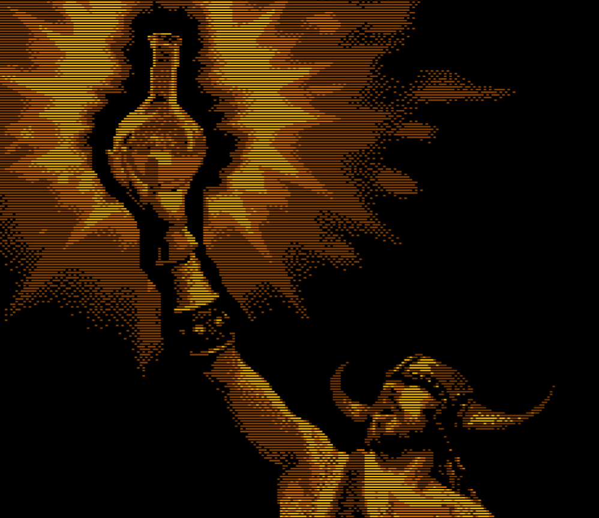

Congratulations on beating Dungeonman 3! Please enter your name and describe how difficult it was to finish this game. :)
Name:
Why I decided to dedicate a good chunk of my life to finishing this game: